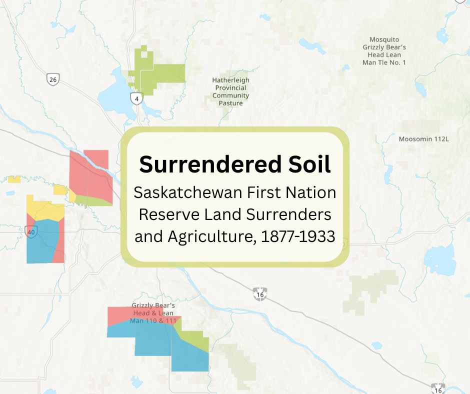
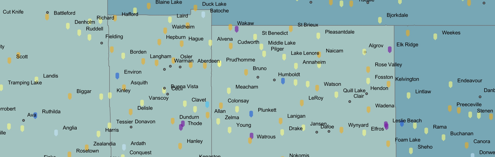
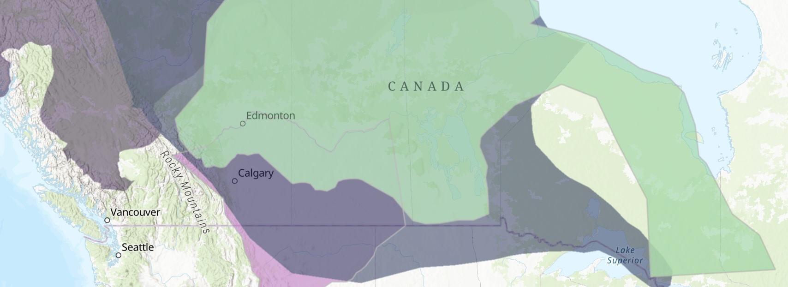

Mapping Batoche
This project revolves around the Battle of Batoche, one of the last conflicts of the 1885 North-West Resistance. The Mapping Batoche team used ArcGIS Online to digitize eleven pre-existing maps. Ten of these maps depict the battle, while the remaining map provides information about the Batoche river lots and their owners around the time of the Resistance. The project's StoryMap presents a narration of the lead-up, events, aftermath, and cultural remembrance of the Battle of Batoche and the wider Resistance. The dashboard allows users to flip through the battle maps and river lots map one by one with an accompanying battle legend.
Settler Colonialism in Tommy Douglas's Saskatchewan
Having won a landslide victory in the 1944 Saskatchewan general election, the Saskatchewan Co-Operative Commonwealth Federation (CCF), led by Tommy Douglas, had little in the way of stopping its agenda. One of the primary goals of Douglas's administration was to eliminate inequalities. Seeing markers of poverty and supposed social deviancy in Saskatchewan's northern Indigenous population, the CCF adopted a colonial and assimilatory policy platform in the region. Through socioeconomic development schemes, from fur and fish monopolies to regional colonies, they sought to eliminate distinct Indigeneity and to assimilate status Indians and Metis. In tracing the assimilation project of the CCF, this project highlights the government's neglect and marginalization of Indigenous voices and ways of life.

Surrendered Soil: Saskatchewan First Nation Reserve Land Surrenders and Agriculture, 1877-1933
Between 1877 and 1933, First Nations with reserves that fell within the modern borders of Saskatchewan lost just over 33% of their reserve land that was originally surveyed for them. The selection of land to be surrendered was not random, but strategic and deliberate for the benefit of the settler population and for the federal government, and to the detriment of First Nations and their ability to use their reserve lands for agriculture. This project adds to the pre-existing literature surrounding the targeted surrender of good agricultural lands on First Nations reserves using Geographic Information Systems (GIS), combining data from the Dominion Land Survey Field Books and soil science classification systems.

Saskatchewan Communities and Population Census Data Map
This project combines two datasets: historical census population data and a public history database of Saskatchewan communities. The census component maps population for the years 1911, 1921, 1931, 1941, 1951, and 1961, allowing users to explore demographic change over time. The communities component contains over 600 Saskatchewan communities with their community type, incorporation dates, founding dates, rail line arrivals, post offices, churches, schools, historical sites, economy, and short histories. Together, these datasets help contextualize settler-colonial expansion while highlighting the limits of census data for representing Metis and Indigenous identities. As Canadian census divisions were designed to support governance rather than to represent Indigenous territorial boundaries, kinship networks, or land-use practices, Metis communities were often undercounted, misclassified, or rendered invisible within census categories.

Prelude to Settler Colonial Policy
Prelude to Settler Colonial Policy is a story map which acts as background for the history explored in "Settler Colonialism in Tommy Douglas's Saskatchewan", the Saskatchewan Communities map, and the Population of Saskatchewan Census Data Map. These sub-projects together show how settler-colonialism has, over a long period of time, worked to undermine the livelihoods of Saskatchewan's Indigenous people, and has displaced and disrupted their traditional communities. This story map includes an interactive ArcGIS map that shows treaty boundaries, Indigenous cultural regions, and geolocated approximate locations of nineteenth century Metis communities using data from Native-Land.ca and the Gabriel Dumont Institute's Saskatchewan Metis Communities Historical Overview.
Mapping Experiences at Muskowekwan Indian Residential School
The Muskowekwan Indian Residential School stands today as the only institution of its kind in Saskatchewan still standing. The Survivors of Muskowekwan IRS have elected to keep the structure as a memorial to the events that took place. The experiences and records of the IRS System elaborate the genocide that occurred within Canada.